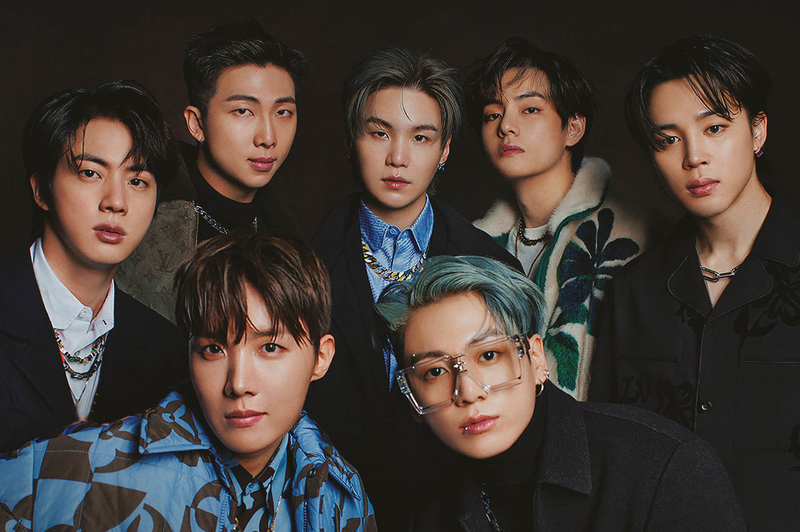

BTS INSIDER!!!

latest news
- Jimin's "Like Crazy" Music Video Surpasses 100 Million Views.
- Jungkook Unveils New Album "3D" With Jack Harlow.
- Suga Begins South Korea's Military Service But Deems Unfit For Combat Duty And Will Serve As A Social Service Agent.
- All 7 BTS Members Commit To HYBE For Second Time With Contract Renewal; K-Pop Sensation Likely To Reunite Around 2025.
- more...
fun facts
- BTS stands for "Bangtan Sonyeondan," which translates to "Bulletproof Boy Scouts" in English.
- RM, one of the members, is fluent in English and often helps with translations during interviews and shows.
- BTS debuted in 2013 under Big Hit Entertainment and initially faced financial struggles before achieving immense success.
- They have their own unique fandom name called "ARMY," which stands for "Adorable Representative M.C for Youth."
- BTS is known for their philanthropic efforts and have donated millions to various charitable causes.
- The group has a "maknae" (youngest member) line consisting of Jungkook, Jimin, and V, who are known for their close friendship.
- Their music often explores themes of youth, mental health, and self-love, resonating with a global audience.
- BTS has broken numerous records, including topping the Billboard Hot 100 chart with their song "Dynamite."
- They are known for their high-energy live performances and intricate choreography.
- BTS has released music in Korean, Japanese, and English, showcasing their versatility.
achievements
- Billboard Hot 100 Records: BTS has achieved multiple entries on the prestigious Billboard Hot 100 chart, setting records for K-pop acts.
- Grammy Nominations: BTS has earned Grammy Award nominations, solidifying their presence on the global music stage.
- Global Influence: With a dedicated fanbase known as the ARMY, BTS has made a significant impact on a global scale, connecting with fans worldwide.
- Social and Cultural Impact: BTS's positive messages, philanthropic efforts, and cultural significance extend beyond music.
- World Tours: BTS's world tours have taken them to numerous countries, showcasing their live performance excellence.
- Record Sales: BTS has achieved remarkable album sales, earning certifications like Platinum and Gold records.
- Fan Engagement: The passionate ARMY fanbase contributes to BTS's success through fan art, social media engagement, and more.
- Innovations: BTS is known for their innovative music videos, live performances, and marketing strategies.